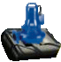
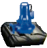
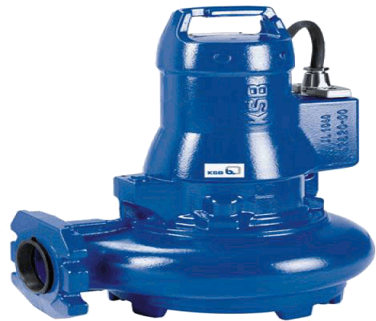

Loading the player...
Napełnianie
Napowietrzanie0 | 240
Sedymentacja35 | 90
Spust14:10
Oczekiwanie

 

Zasilanie
Praca
Tlen : 2303
Napełnianie
Napowietrzanie45 | 240
Sedymentacja0 | 9013:10
Spust14:10
Oczekiwanie
Zasilanie
Praca
Tlen : 2303